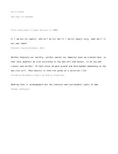

TFZamonaviy insonning erkinlik oldidagi psixologik qo'rquvi va yolg'izlik hissi haqidagi fundamental asar.
Ushbu asarda Erich Fromm zamonaviy insonning erkinlikka bo'lgan munosabatini va uning psixologik oqibatlarini tahlil qiladi. Muallif erkinlikning insonni yolg'izlantirishi va uni totalitar tuzumlarga qaramlikka yetaklovchi qo'rquv hissini qanday uyg'otishini ilmiy nuqtai nazardan yoritib beradi.